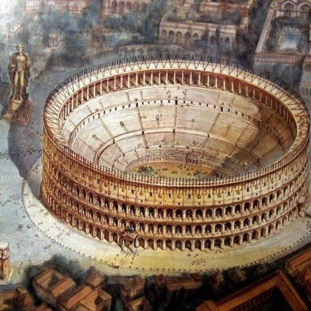
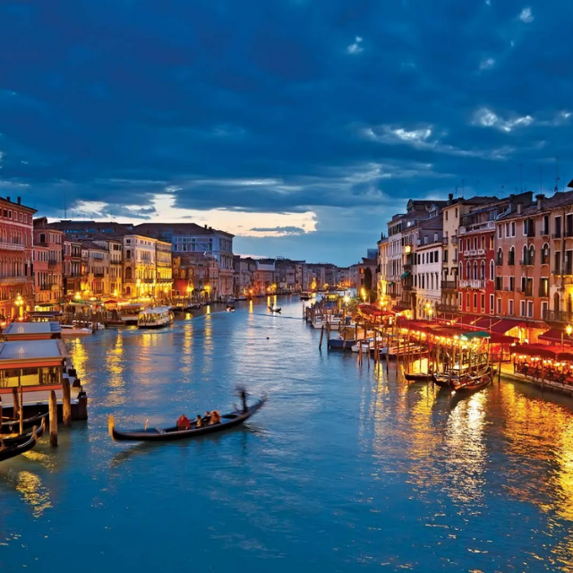
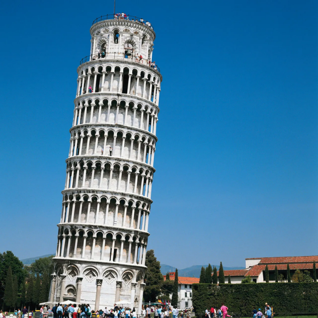

Colosseum (Rome)
The most iconic symbol of Ancient Rome, an amphitheater that once hosted gladiator battles and grand events.
Nearby Hotels:
-
Hotel Palazzo Manfredi – 0.2 km
(4.8)
💲300 / night
-
Mercure Roma Centro Colosseo – 0.3 km
(4.4)
💲180 / night
-
Rome Times Hotel – 1.0 km
(4.5)
💲160 / night

Grand Canal of Venice
One of the most romantic places in the world, famous for gondola rides, Venetian architecture, and stunning waterways.
Nearby Hotels:
-
Hotel Danieli, a Luxury Collection – 0.5 km
(4.7)
💲400 / night
-
Gritti Palace – 0.7 km
(4.9)
💲500 / night
-
Ca’ Sagredo Hotel – 1.0 km
(4.6)
💲280 / night

Leaning Tower of Pisa
A world-famous architectural wonder, known for its unintended tilt and rich medieval history.
Nearby Hotels:
-
Hotel Pisa Tower – 0.3 km
(4.4)
💲130 / night
-
Hotel Bologna Pisa – 0.8 km
(3.9)
💲110 / night
-
Hotel Relais Dell’Orologio – 0.5 km
(4.3)
💲150 / night